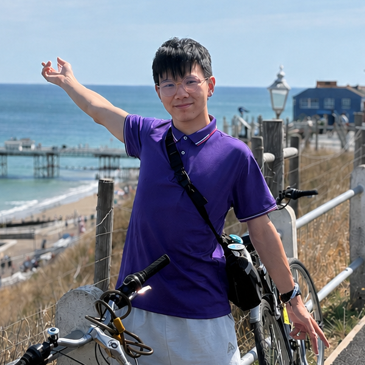
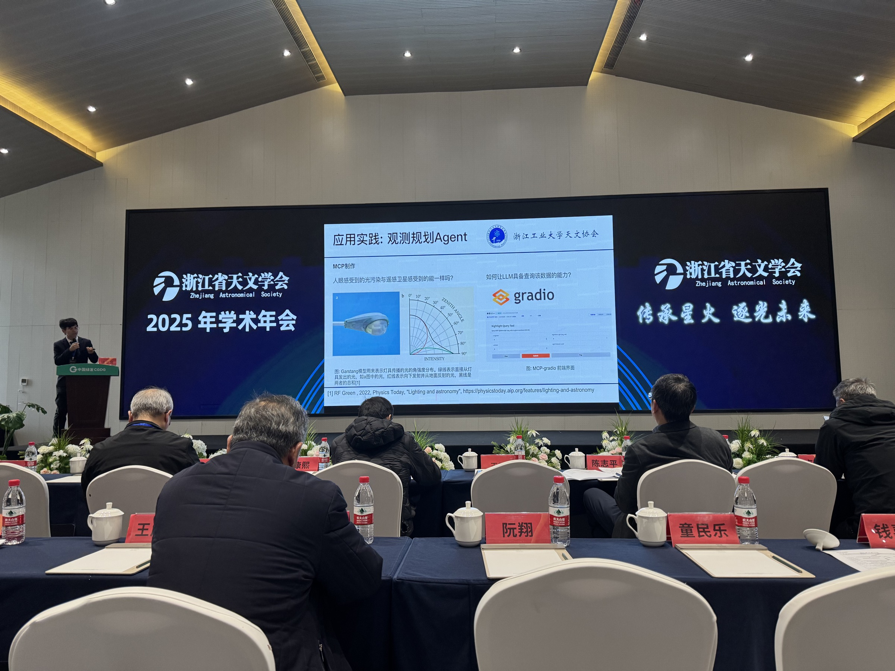

Applied Physics undergraduate
Physics & Astronomy
Gravitational-wave astrophysics · Exoplanet direct imaging · Space interferometry

About
Zhechen Shi · 史喆宸
I am an undergraduate in Applied Physics at the School of Physics & Optical Engineering, Zhejiang University of Technology. My research interests center on gravitational-wave astrophysics and the direct imaging of exoplanets through space interferometry, alongside cold-atom physics and quantum precision measurement.
Through undergraduate research training, I am developing experience in scientific data analysis, numerical modeling, and experimental optics. I am interested in how precise instruments and computational methods can recover weak astrophysical signals and connect observations with physical models.
Research interests
- Gravitational-wave astrophysics: data analysis and statistical methods for space-based observatories, including LISA, TianQin, and Taiji.
- Exoplanet direct imaging and interferometry: high-contrast observations, space-based optical/infrared interferometry, and nulling techniques.
- Cold atoms and quantum precision measurement: laser cooling and trapping, optical systems, and experimental image analysis.
Education
- Applied Physics, School of Physics & Optical Engineering, Zhejiang University of Technology · 2025–present.
- Polymer Materials and Engineering, College of Materials Science and Engineering, Zhejiang University of Technology · 2024–2025.
Academic rank: 3 / 125.
Contact
I welcome discussions about gravitational-wave data analysis, exoplanet observations, and scientific computing.
- Email: zhechenshi.physics@gmail.com
- Academic email: 302024549082@zjut.edu.cn
- GitHub: Albus1446
- WeChat: szzc3655
Research
Research experience & projects
Gravitational-wave data analysis
Undergraduate research training
- Research training at Taiji Laboratory and participation in an undergraduate innovation training project in gravitational-wave astrophysics at the National Astronomical Observatories, Chinese Academy of Sciences (NAOC).
- Developing experience in gravitational-wave data analysis and the relationship between observational signals and astrophysical models.
Space interferometry and exoplanets
Undergraduate project work
- Research training in space interferometry and exoplanet observation.
- Exploring the relationship between observational methods and scientific objectives, with interests in direct imaging, high-contrast observations, and nulling interferometry.
Compact magneto-optical trap teaching platform
Member, Provincial Key Laboratory of Quantum Precision Measurement · November 2025–present
- Participating in the development of a compact magneto-optical trap (MOT) teaching platform at Zhejiang University of Technology.
- Supporting construction and improvement of the probe and vacuum subsystems, and assisting with cooling/pumping beam alignment.
- Working on CCD-based atom-number estimation and a science communication webpage for the platform.
SERF magnetometer-based cellular magnetic signal experiment
Undergraduate project lead · April–October 2025
- Received the Outstanding Award in the China Undergraduate Physics Experiment Tournament.
- Led experimental data processing and built AI agent workflow scripts and documentation for preprocessing, feature extraction, and visualization.
- Topics: quantum precision measurement, MEMS, microfluidic chips, and biomagnetic field signals.
Shenchen: AI agent for astronomical observation planning
Undergraduate project lead · June–July 2025
- Won Second Prize in the GeoGPT Model Application Practice Pilot Competition.
- Built an astronomical observation planning AI agent and an MCP workflow for nighttime light data retrieval.
- Topics: raster data processing, light-pollution modeling, and AI-assisted scientific workflows.
- Project repository
Open projects and writing
- Cold-atom CCD image analysis — Absorption-image processing, optical-depth calculation, atom-number estimation, and two-dimensional Gaussian fitting. Adapted from
TakatoPhy/coldatom-imaging, with an experimental-data notebook and example visualizations. - Exploratory gravitational-wave research report — Preliminary modeling and research notes on gravitational-wave data analysis and possible gravity-theory corrections (May 2026).
Academic exchange
Talks & posters
AI development platforms for astronomy association projects
2025 Annual Meeting of the Zhejiang Astronomical Society · 12–14 December 2025
Delivered a 15-minute talk on applying AI development platforms to astronomy association project construction and practice.

Posters and academic exchange
- Poster presentation at AI+ Academic Conference 2026, administered by UniHive and held at Clare Hall and Murray Edwards College, University of Cambridge.
- Participation in the Undergraduate Astronomy Forum at Westlake University.
- Summer study in Cambridge and a particle physics summer school at Fudan University.
Recognition
Selected honors
- Best Poster Award, AI+ Academic Conference 2026 — administered by UniHive and held at Clare Hall and Murray Edwards College, University of Cambridge.
- Best Poster, Undergraduate Astronomy Forum, Westlake University.
- Finalist, MCM/ICM 2026, Problem B — space elevator transportation planning for lunar base construction.
- Zhejiang Provincial Government Scholarship.
- Outstanding Award, China Undergraduate Physics Experiment Tournament — SERF magnetometer project.
- Second Prize, GeoGPT Model Application Practice Pilot Competition — Shenchen observation planning project.
Methods & community
Tools, coursework & service
Scientific computing and analysis
Python, MATLAB, ROOT; experimental data analysis, numerical modeling, and scientific visualization.
Writing, optical design, and research tools
LaTeX, Overleaf, Zotero, Visio, draw.io, Ansys Zemax OpticStudio, AutoCAD, Scimaster, and ChatGPT. Experience with Windows, Linux, and macOS.
Coursework
Advanced Mathematics I; Linear Algebra B; Python Programming; College Physics Experiment A; University Physics; Methods of Mathematical Physics; Introduction to Astronomy; Astronomy Today; Quantum Mechanics; Statistical Mechanics; Electrodynamics; Quantum Optics.
Languages and service
- English: CET-6 481; CET-4 599; experience reading English academic literature.
- Deputy Leader, Zhejiang University of Technology Astronomy Association.
- Deputy Director of Academic Affairs, Zhejiang University of Technology AI Association.
- Department Assistant, Nano New Media Studio.